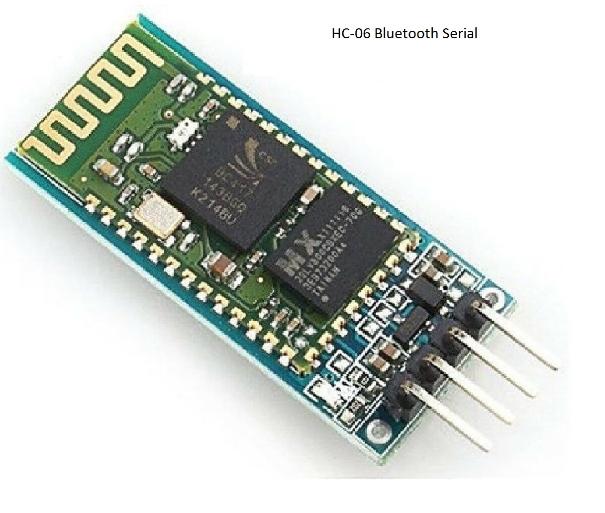

Joystick and Receiver
The pizero W has a bluetooth chip (as well as wifi chip).
The bluetooth chip can communicate with a cheap HC-06 receiver, but some setup is required.
- Once prior to communication the pi needs to pair with the HC-06 (password=1234)
- Each time the pi boots up, the pi needs to bind the HC-06 to a serial port
This piHat is available from ebay for about $15.00 and has a mini joystick and buttons.
This provides basic bluetooth communication with no noticeable lag

A raspberry pi zero is cheaper than a raspberry pi 3 or 4 which is really overkill for this type of function
All that is required is that we send a few characters 3 or 4 times a second and respond to a joystick.
Setup
The facilitate the pairing with HC-06 without needing an hdmi display. The pi's wifi
chip is used to create an access point. A laptop can then connect to the pi and pair with
the hc-06 using a windows terminal program (like putty) on the laptop, and the bluetooth
control manager on the pi
Wiring
The HC-06 has 3 pins that are connected to an arduino nano:
- VCC to 5V (3.3V will not work)
- Gnd to Gnd
- Tx on HC-06 connected to pin D0 (Rx) on the Arduino Nano
An alternate solution is to connect the tx pin on the HC-06 to a different pin on the nano
and use the software serial library.
It is a little simpler just to connect to the arduino nanos D0 (rx) pin and then use Serial.read() to
read characters. One note is that you will need to disconnect the HC-06 when flashing the arduino as the
rx pin is used to flash the nano.